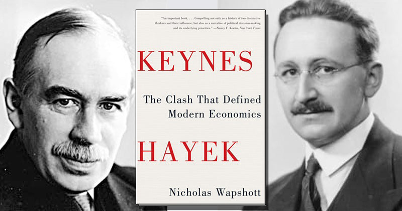
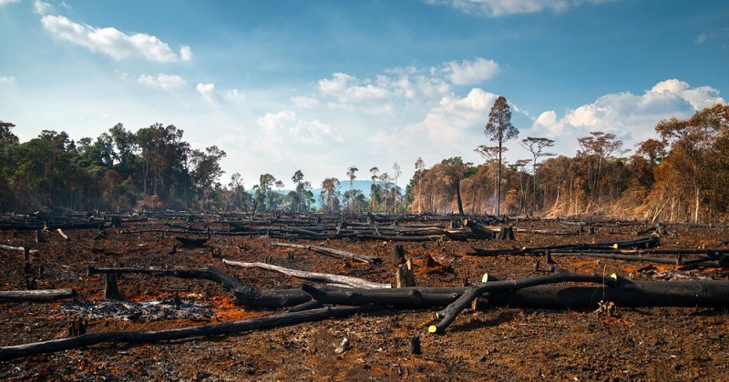
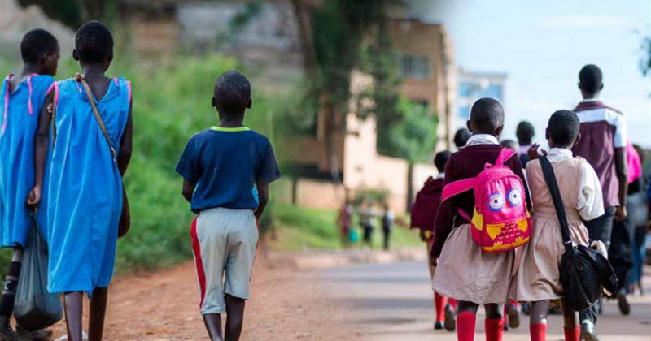
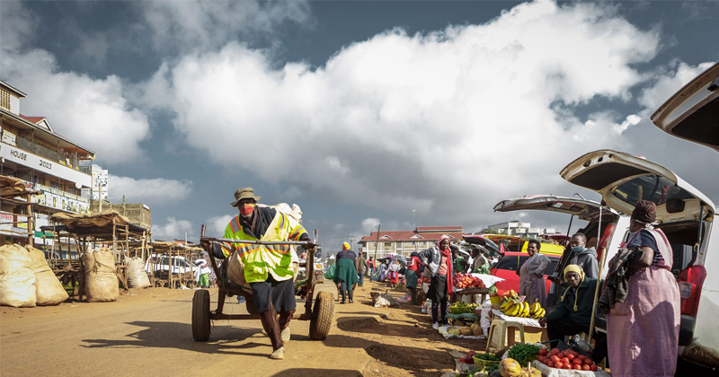

Neoliberalism, agriculture, and sustainable rural development in Pakistan
A master’s research paper on trade policy, smallholder agriculture, and sustainable rural development in Pakistan.
Blog
A collection of essays, reviews, and research-led reflections on institutions, economic change, social outcomes, and the stories we tell about them.
Browse all posts
A master’s research paper on trade policy, smallholder agriculture, and sustainable rural development in Pakistan.
A data-driven overview of Gilgit-Baltistan spanning population, geography, and household demographics across its ten districts.
A look at how structural adjustment, reform, and international finance shape poverty outcomes in Sub-Saharan Africa and Pakistan.

An account of one of the most consequential debates in modern economics between a free-market enthusiast and an interventionist.

Why the way we frame environmental problems shapes the kinds of action, tradeoffs, and collective responsibility we accept.

A reflection on the incentives, institutional habits, and blind spots that often weaken the development enterprise.
How digital infrastructure and open banking could widen access to financial services while reshaping traditional banking models.

How development work is changing through new operating models, partnerships, and a stronger focus on measurable impact.
A look at what it takes to improve quality of life in rural communities facing structural inequality and limited public services.
A discussion of China’s regional ambitions and the strategic responses available to neighboring states and global powers.
A research-led look at how protectionism and industrial policy contributed to China’s economic rise.